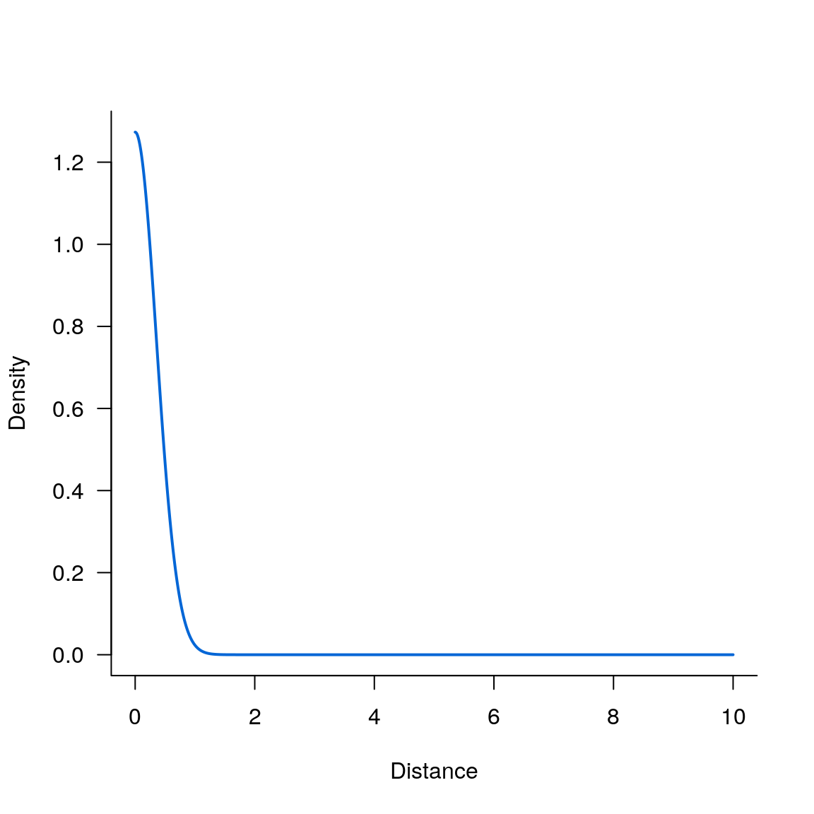
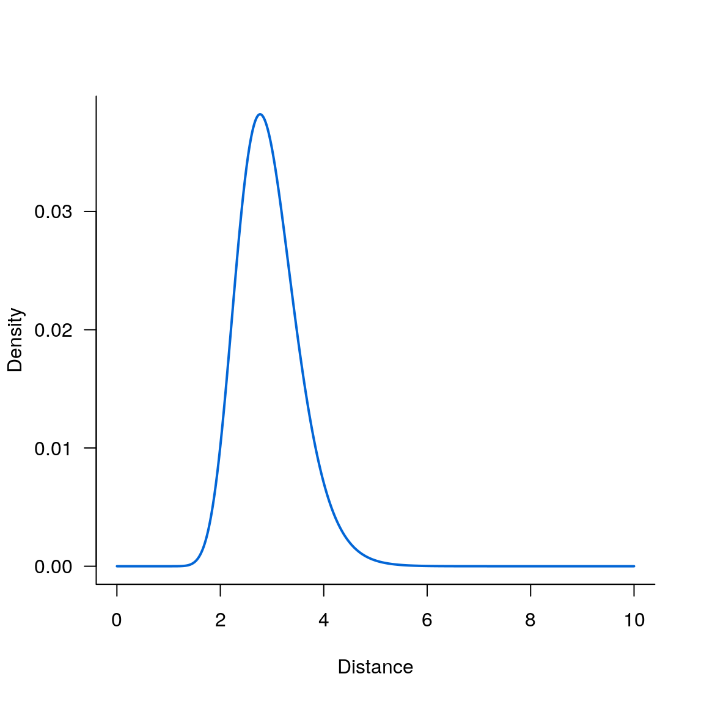
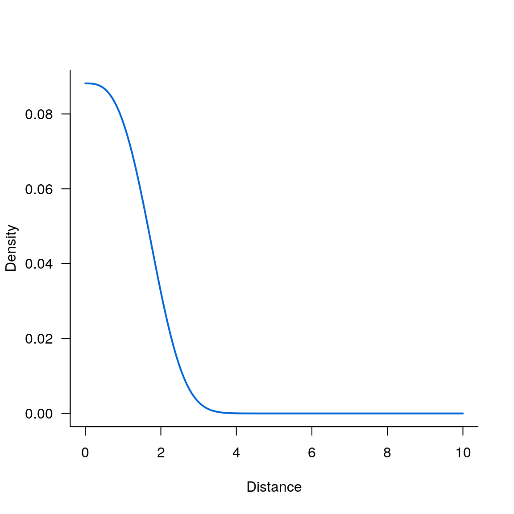

vignettes/get_started.Rmd
get_started.RmdThere are five kernels currently available, use kernels() to list them all:
#>
#> Dispersal kernels currently available:
#> kern_gaussian() --- 2 parameters
#> kern_exponential() --- 2 parameters
#> kern_exponential_power() --- 3 parameters
#> kern_2Dt() --- 3 parameters
#> kern_lognormal() --- 3 parametersFirst parameter is the distance at which the kernel density is evaluated, second is the scale parameter and the third is the shape parameter (for kernels that require 3 parameters):
kern_gaussian(4, 3)
kern_exponential(4, 3)
#
kern_2Dt(4, 3, 2)
kern_exponential_power(4, 3, 2)
kern_lognormal(4, 3, 2)#> [1] 0.005977623
#> [1] 0.004661421
#> [1] 0.004583662
#> [1] 0.005977623
#> [1] 0.001963755meanDispDist() return the mean dispersal distance:
meanDispDist('gaussian', 3)
meanDispDist('exponential', 3)
meanDispDist('lognormal', 3, 2)
meanDispDist('k2Dt', 3, 2)
meanDispDist('exponential_power', 3, 2)
meanDispDist('lognormal', 3, 2)#> [1] 2.658681
#> [1] 6
#> [1] 22.16717
#> [1] 4.712389
#> [1] 2.658681
#> [1] 22.16717Below, we exemplify how to plot dispersal isotropic kernels with diskers.
seqx <- seq(0, 10, 0.001)
par(las = 1, bty = 'L')
plot(seqx, kern_gaussian(seqx, .5), type='l', lwd=2, col='#0366d6', xlab='Distance', ylab='Density')
par(las = 1, bty = 'l')
plot(seqx, kern_lognormal(seqx, 3, .2), type='l', lwd=2, col='#0366d6', xlab='Distance', ylab='Density')
par(las = 1, bty = 'l')
plot(seqx, kern_exponential_power(seqx,2,3), type='l', lwd=2, col='#0366d6', xlab='Distance', ylab='Density')